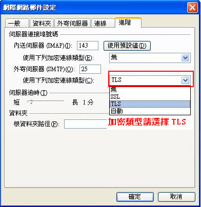

| 管理功能說明 |
Q1. |
hiBox管理者登入介面連結網址 |
Ans. |
https://apply.hibox.hinet.net/admlogin.php；或由www.hibox.hinet.net網頁中的「管理者登入」亦可。 |
Q2. |
hiBox的帳務週期為何？帳單上為何不能提供帳單明細？我可以去哪裡獲知帳務明細？ |
Ans. |
1. hiBox的帳務週期為何？ hiBox費用採取後收制，出帳週期為每月21日至次月20日，帳單週期如下： 1/21~ 2/20 的使用費為三月份帳單 2/21~ 3/20 的使用費為四月份帳單 3/21~ 4/20 的使用費為五月份帳單 4/21~ 5/20 的使用費為六月份帳單 5/21~ 6/20 的使用費為七月份帳單 6/21~ 7/20 的使用費為八月份帳單 7/21~ 8/20 的使用費為九月份帳單 8/21~ 9/20 的使用費為十月份帳單 9/21~10/20 的使用費為十一月份帳單 10/21~11/20 的使用費為十二月份帳單 11/21~12/20 的使用費為一月份帳單 12/21~ 1/20 的使用費為二月份帳單 2. 帳單上為何不能提供帳單明細？ 由於hiBox與其他加值產品(如hiHosting)在帳單上是透過同一個會計科目”HiNet寬頻企業電子商務費”，各產品帳務週期略有不同，故未提供帳務週期，尚祈海涵！ 3. 我可以去哪裡獲知帳務明細？ (1)若貴公司使用自己的Domain，您可至[管理者介面][帳務查詢]查得。 (2)若貴公司使用hiBox的Domain(@hibox.hinet.net)，煩請撥冗致電0800-080365，將有專人為您服務，謝謝！ |
Q3. |
我把hiBox管理者介面的帳號、密碼忘記了，要怎麼辦？ |
Ans. |
請填寫hiBox異動申請書，傳真到(02) 2311-8186，系統將為您重新設定您所指定的管理者密碼。系統設定成功後會e-mail告知原設定的管理者帳號及異動密碼成功的資訊。 |
Q4. |
我要如何開設公司其他員工帳號？ |
Ans. |
我們在您申請後，會以電子郵件方通知您，郵件信函中描述如下： 您可透過管理介面新增、刪除、查詢、修改信箱密碼等功能輕鬆管理貴公司Domain Name內的hiBox帳號。 網域：XXX 管理者帳號：XXX 管理密碼：XXX 請至http://www.hibox.hinet.net 管理者登入(http://apply.hibox.hinet.net/admlogin.php) 第一次登入後,請立即至[變更管理者密碼]變更密碼。 |
Q5. |
客戶申請hiBox信箱超過50個時，應如何處理較佳？ |
Ans. |
若客戶申請hiBox時，有指定專屬的Domain Name，且帳號超過50個時，建議客戶將所有帳號清單整理成電子檔，並透過管理者介面中「信箱管理」→「批次信箱異動」功能將清單一次匯入，密碼可先統一設定後，使用者再自行登入webmail變更密碼。 |
Q6. |
公司有多個部門，如何寄信給該部門下的所有員工？ |
Ans. |
您可為部門建立一個群組信箱，並將屬於該部門的員工Email設為群組成員；發信時將群組信箱設為收件者，hiBox將會為您把信件寄送給各個群組成員。設定方式請登入管理者介面執行「系統管理」→「群組郵件」功能。 |
Q7. |
如何知道信件是否成功寄出？ |
Ans. |
登入管理者介面執行「檢視」→「郵件追蹤」功能，可查得您公司下所有帳號寄出或收到信件的郵件記錄。 |
| 申裝與竣工與退租問題 |
Q1. |
DNS由客戶自行管理、資訊公司管理或由hiBox機房管理有何差別？ |
Ans. |
DNS由誰管理，沒有費用或伺服器運作上的差別；主要是DNS設定必須正確，否則客戶信箱無法收到信件。 |
Q2. |
為什麼我已經收到竣工通知，但帳號卻無法使用？ |
Ans. |
一般來說，台灣本島 DNS 需要24小時的學習時間，因此當您與 hiBox 的工程師討論完 DNS 設定事宜後尚需 24 小時才能正式使用。 註：國外的 DNS 需要2~7天的學習時間（視網路及距離而定），因此您國外客戶寄給您的信約需2-7天，才會收的到喔！ |
Q3. |
DNS完成設定已經超過24小時了，為何我還是無法使用？ |
Ans. |
請您至 www.hibox.hinet.net 輸入完整郵件帳號(如xxx@abc.com.tw)及密碼登入，看看您的郵件信箱內是否有信，如果有信，則需請您檢查一下是否依我們提供的操作手冊更改您的Outlook 或 Outlook Express 設定（請詳細對照說明手冊）；如果沒有信，則可能是DNS學習時間(國內的 DNS 需要1~2天的學習時間，國外的 DNS 需要2~7天的學習時間（視網路及距離而定）才會收的到信喔~；如果您的 domain 不是 .tw 結尾（如msn.com），也視為此種情況。如果還是沒法子收到信，請連絡我們，我們再為您進行詳細確認。 |
Q4. |
我沒有收到竣工通知單，該怎麼辦？ |
Ans. |
如果您於七~十個工作日後未收到竣工通知單或竣工簡訊通知，請撥電話給我們：0800-080365，我們會再寄一次竣工通知單給您。 |
Q5. |
hiBox可否在郵件軟體Outlook Express或Outlook內收信呢？ |
Ans. |
是可以的，hiBox提供客戶可使用郵件軟體POP3的收取方式，將郵件收至電腦內，設定時請將內送郵件伺服器及外寄郵件伺服器設定為www.hibox.hinet.net ；帳號部份則填入完整的e-mail address(例如:abc@hibox.hinet.net) |
Q6. |
公司原本已經有自有網域的Email信箱，可否只移轉部份帳號到hiBox？ |
Ans. |
同一個網域 (domain) 只能存在一個 mail server，無法同時存在多個 mail server；也就是說，當貴公司決定使用自有網域申請 hiBox服務時，您原來的企業信箱需全數移轉至 hiBox。 |
Q7. |
公司原本已經有自有網域的Email信箱，如何申請使用hiBox的傳真型信箱？ |
Ans. |
如果只是想使用hiBox接收傳真的功能，建議您可單獨申請郵件網域為hibox.hinet.net的傳真信箱，不需將公司所有Email信箱移轉至hiBox。 |
| 備份信箱問題 |
Q1. |
同時發信給三個收件者，分別為hotmail、yahoo及gmail的帳號。請問備份信箱會收到幾封信？ |
Ans. |
hiBox郵件主機是根據收件者的網域(domain)來做發信的行為；根據上述的問題，hiBox發信主機將會發出三封信件給三個不同的網域收件者(domain)，所以備份信箱會收到三封備份的信件。 |
Q2. |
同時發信給三個都是gmail帳號的收件者。請問備份信箱會收到幾封信？ |
Ans. |
hiBox郵件主機是根據收件者的網域(domain)來做發信的行為；根據上述的問題，hiBox發信主機將會發出一封信件給同一個網域收件者(domain)，所以備份信箱會收到一封備份的信件。 |
Q3. |
客戶發信給公司三個hiBox信箱，請問備份信箱會收到幾封信？ |
Ans. |
備份機制是根據收件者的網域(domain)來執行信件備份；因為三個信箱都是同一個網域，所以備份信箱只會收到一封備份信件。 |
Q4. |
有時候同樣的信件為什麼會備份到兩、三封？ |
Ans. |
如果寄件方的郵件主機根據收件者個數，將同一封信分成相對應封數寄到hiBox（例如有三個收件者的話，對方的郵件主機就將信件分成三封寄出），因為hiBox收到三封信件，所以您的備份信箱會收到三封備份信件。 |
Q5. |
使用 hiBox 雲端郵件備份服務對組織的好處？ |
Ans. |
|
| 網站使用問題 |
Q1. |
請問剩餘郵件空間大小，從那兒可以查詢？ |
Ans. |
登入hiBox的webmail介面（http://www.hibox.hinet.net），進入收件匣，郵件清單下方會顯示目前信箱總容量及已使用多少容量等資訊 |
Q2. |
寄給對方的信是否有檔案容量限制？ |
Ans. |
hiBox 寄送郵件時，一封郵件包括所有附件的大小不應超過 50 MB。 |
Q3. |
我忘記密碼怎麼辦？ | ||||
Ans. |
|
Q4. |
透過Webmail寄信時，如何修改我的寄件者顯示名稱？ |
Ans. |
登入hiBox的webmail介面（http://www.hibox.hinet.net），點選「選項設定」→「郵件」→「個人資訊」頁面中的「顯示名稱」內容即可。 |
Q5. |
我可以直接匯入或匯出我的通訊錄嗎？ |
Ans. |
可以的，您可以把您在Outlook/Outlook Express的通訊錄匯入至hiBox Webmail中，您亦可以把您在hiBox Webmail中的通訊錄匯出一份保存。詳細操作方式請至下載區下載通訊錄匯入、匯出操作說明。 |
Q6. |
什麼是自動回信？我該去那兒設定？ |
Ans. |
登入webmail介面後，選擇「選項設定」→「郵件」→「自動回信」。您可以設定一段期間，在這期間內所有寄到您信箱的信件，系統會幫您自動回覆。 |
Q7. |
什麼是隔離區？ |
Ans. |
隔離區為存放被掃瞄出來為垃圾信的郵件的一個獨立空間，不佔原本您申請的信箱容量。 |
Q8. |
有效信件會不會被置放到隔離區？如果我發現有效信件被置入隔離區，我應該怎麼辦？ |
Ans. |
如果信件符合我們所設定的廣告信規則，則該封信件將被置放到隔離區內，系統會每天定時寄送被隔離信件通知信，您可以在該信件內看到哪些信件被隔離，若是想將某封被隔離信件寄回您hiBox信箱，只需按「釋出」，您也可以登入隔離區，一樣也可以檢視您被隔離的信件，與將被隔離信件釋出，隔離區信件系統預設保留七天，請定時檢視被隔離信件，以免遭系統清除。 |
Q9. |
hiBox提供的防垃圾郵件功能所產生的「隔離區」所佔的空間是否列入信箱容量？ |
Ans. |
不會的，隔離區不會占信箱空間。 |
Q10. |
hiBox提供的防垃圾郵件功能如何運作？ | ||||
Ans. |
|
Q11. |
我常收到一些我不想收到的郵件，可以設定不要收到嗎？ |
Ans. |
您可透過hiBox提供的個人郵件篩選功能，設定篩選規則將不想收到的信件直接丟棄。設定位置為：登入webmail介面後，選擇「選項設定」→「郵件」→「郵件規則設定」。 |
Q12. |
什麼是外部收信，我該如何設定？ |
Ans. |
外部收信指的是您收取hiBox以外信箱的郵件，登入webmail介面後，選擇功能選項中的「收取外部郵件」；在視窗中填入您外部郵件的POP3伺服器、使用者帳號、密碼， 按下「收取」鈕即完成設定。 |
Q13. |
如何在Outlook收完信後，Webmail還可以保留信件(保留伺服器郵件備份)？ | ||||
Ans. |
|
Q14. |
為什麼我的登入Webmail有時候會出現「階段作業逾時，請重新登入」的訊息？ |
Ans. |
因為安全的考量，您在書寫郵件或是閱覽郵件時，若是有超過60分鐘沒有與伺服器連線（就是說沒有按任何按鈕或是換頁）的動作，就會被伺服器當作逾時，而被登出。 若是您沒有超過60分鐘就被登出，請確認以下2個動作，應該可以解決您的問題。 1.請先清除瀏覽器的暫存檔（工具→網際網路選項→一般→刪除檔案），重新啟動瀏覽器再試試。 2.確認瀏覽器沒有設定proxy（工具→網際網路選項→連線→區域網路設定→此頁面中，有打勾的都取消。 |
Q15. |
無法開啟新視窗（新郵件、轉寄、回覆），有關快顯封鎖問題。 |
Ans. |
目前常見會阻檔開新視窗的軟體如下
|
Q16. |
hiBox WebMail網頁登入是否支援其它語系使用介面？ |
Ans. |
是的，hiBoxWebMail網頁目前支援繁體中文、簡體中文以及英文的使用介面。 |
Q17. |
什麼是「公用通訊錄」，要如何設定？ |
Ans. |
若您的郵件信箱有公司Domain Name，則管理者可以透過管理者介面去建立公司所有使用者都可以使用的聯絡人名單，您在寫信時直接點選「公用通訊錄」，就會帶出「公用通訊錄」的聯絡人清單。 |
Q18. |
什麼是「公司通訊錄」，要如何設定？ |
Ans. |
「公司通訊錄」不需要做任何設定，只要是您的郵件信箱有公司Domain Name，則您在寫信時直接點選「公司通訊錄」，就會帶出相同公司Domain Name的所有帳號聯絡人清單。 |
Q19. |
為什麼我收到的信件附加檔案的檔名都會變成「winmail.dat」？ |
Ans. |
這是透過outlook發信產生的一個問題，outlook在發有附件的郵件時，若顯示模式不是html模式，則附件檔名都會被改成「winmail.dat」，只能透過outlook收信才有辦法打開該附件，所以請用outlook發信的同事設定成html模式發信，或是收信端要用outlook收信才有辦法開啟這種郵件。 |
Q20. |
收件夾每頁顯示的郵件數量可以調整嗎？ |
Ans. |
可以的，登入webmail介面後，選擇「選項設定」→「郵件」→「佈局」。您可以設定「每頁的郵件」顯示的郵件數量。 |
Q21. |
信箱爆了我該怎麼辦？ |
Ans. |
您登入webmail將不需要的郵件刪除；或透過Outlook Express等收信軟體，將郵件一次收下。 |
Q22. |
我已經將信丟到垃圾桶了，可是為何信箱空間還是不夠？ |
Ans. |
在垃圾桶中的郵件還是會佔去您的信箱空間，除非您將垃圾桶中的郵件清除，郵件所佔的空間才會釋放。 |
Q23. |
hiBox提到可以發送簡訊，我要去那兒發送，費用如何計算？ |
Ans. |
您以在www.hibox.hinet.net登入您的email帳號及密碼後，即可以透過網 頁發送簡訊(請詳見簡訊發送操作手冊)；費用依hiBox網站公告費率計收。 |
Q24. |
hiBox 是否提供 SSL 安全認證？ |
Ans. |
是的，webmail 可透過 https 協定，例如 https://www.hibox.hinet.net/ ，如果您使用 Outlook 或 Outlook Express 來收發郵件，則可以在帳號設定畫面中的『進階』頁籤將 POP 及 SMTP 的『這個伺服器需要安全連線』打勾。（若此選項打勾之後就無法傳送及接收郵件了， 可能是因為貴公司的網路環境不支援安全連線，那麼，請您將此勾取消即可恢復正常） |
Q25. |
為什麼輸入我的帳號後，無法登入webmail？ |
Ans. |
若是您確認您的帳號、密碼無誤，請您輸入完整的郵件帳號（包含＠domain name），應該就可以正常登入了。 |
Q26. |
寄送信件時收件人是否有人數限制？ |
Ans. |
有的，hiBox 寄送郵件時，一封郵件中的收件人數最多為 250 人。 |
Q27. |
登入到hiBox Webmail遇到 JavaScript Error 時該怎麼辦？ |
Ans. |
請先清除瀏覽器的暫存檔（工具→網際網路選項→一般→刪除檔案），重新啟動瀏覽器再試試。 |
Q28. |
hiBox是否有說明手冊可供下載? |
Ans. |
有的，請至 hiBox下載區下載。 |
Q29. |
我可以修改自己的密碼嗎？ |
Ans. |
可以的，登入webmail介面後，選擇「選項設定」→「全域」→「變更密碼」即可。 |
Q30. |
這些常見問題說明還是無法解決我的問題，我該怎麼辦？ |
Ans. |
您可以撥打請撥0800-080365免付費客服電話詢問，或是在hiBox首頁留言（http://www.hibox.hinet.net/uwc/uwc/homepage_tw/contact.html），我們會有專人為您服務。 |
| Outlook使用問題(105/04新增) |
Q1. |
hiBox 是否提供 SSL 安全認證？ |
Ans. |
是的，webmail 可透過 https 協定，例如 https://www.hibox.hinet.net/ ，如果您使用 Outlook 或 Outlook Express 來收發郵件，則可以在帳號設定畫面中的『進階』頁籤將 POP 及 SMTP 的『這個伺服器需要安全連線』打勾。（若此選項打勾之後就無法傳送及接收郵件了， 可能是因為貴公司的網路環境不支援安全連線，那麼，請您將此勾取消即可恢復正常） |
Q2. |
我無法收發信件？ | ||||||
Ans. |
確認使用者帳號是否設定正確(請詳見操作手冊)
|
Q3. |
我按照操作手冊設定Outlook/Outlook Express中的POP及SMTP，在傳送／收取郵件為何會出現輸入帳號和密碼的視窗，我該輸入什麼 |
Ans. |
出現此一視窗皆為帳戶名稱設定錯誤；帳戶名稱須為完整的email(例如:abc@hibox.hinet.net)。 |
Q4. |
使用者按下傳送鈕後，Outlook Express彈出錯誤視窗。 | ||||||
Ans. |
|
Q5. |
安裝PC-cillin就無法使用Outlook收信？ |
Ans. |
PC-cillin為了對outlook收取的信件掃毒，會將outlook收件伺服器(POP3)改成localhost，此時如果將POP-SSL開啟，因PC-cillin無法處理SSL，會造成"無法使用〔安全密碼驗證〕登入伺服器"的錯誤。解決方法為將SSL選項關閉，或將PC-cillin的POP3掃瞄關閉。 |
Q6. |
我在大陸地區收發電子郵件有問題該怎麼辦？ |
Ans. |
為提升兩岸間郵件傳輸品質，hiBox已完成上海機房之建置作業。 若在大陸地區遇到收發電子郵件問題，可於hiBox首頁→下載區，下載操作手冊(大陸地區收發hiBox障礙排除設定) |
Q7. |
如何設定outlook收信後可以保留伺服器上的信件？ |
Ans. |
若是您使用outlook則可以在「電子郵件帳號」「網際網路電子郵件設定」「其他設定」「進階」頁面勾選「在伺服器上保留一份郵件副本」 若是您使用outlook Express則可以在「郵件帳戶」「進階」頁面勾選「在伺服器保留郵件備份」 |
Q8. |
傳送接收信件時出現 0x800ccc0D, 0x800ccc0E 0x800CCC0F錯誤該怎麼辦？ | ||||||
Ans. |
通常是個人電腦內軟體或網路連線所造成，
|
Q9. |
傳送接收信件時出現 0x800C0133 的錯誤該怎麼辦？ | ||||||||||||||||
Ans. |
若您收件匣的 "收件匣.dbx" 已超過 2GB 的儲存量，便會很容易出現 0x800C0133 的錯誤，您除了可以在 Outlook Express 的 "本機資料夾" 中建立新資料夾，將部份信件移動過去，也可以按照下列步驟修正該問題。
|
Q10. |
hiBox的客戶在國外可用郵件軟體發信嗎? |
Ans. |
是可以的，hiBox要求客戶在發信時做帳號密碼的認證，故客戶在國外利用其他ISP連線上網時，亦是可以直接利用hiBox信箱發信的。 設定方式：請在Outlook Express內 ->於 「外寄郵件伺服器」將「我的伺服器需要驗證」的選項打勾，並設定hiBox的帳號及密碼，即可順利發信。 另外，在國外部份地點（如飯店、機場等）上網時，可能會發生無法透過hiBox主機寄信的情形；此時可詢問當地提供網路的服務中心（飯店或機場櫃檯），是否有限制禁止連線至外部的SMTP主機。 |
Q11. |
在國外無法透過hiBox發信該怎麼辦？ |
Ans. |
您的smtp伺服器，請重新設定為202.39.131.130再試看看，若是還不行，請再看下面說明。 請您開啟，開始→程式集→附屬應用程式→「命令提示字元」 輸入telnet 202.39.131.130 25然後按Enter鍵 看看是否有類似以下回應 220 mta04.hibox.hinet.net-- Server ESMTP (iPlanet Messaging Server 5.2 HotFix 1.14 (built Mar 18 2003)) 若是出現連線失敗的訊息，那可能是被當地網路提供者擋住了SMTP PORT，請上http://www.hibox.hinet.net登入收發信件，謝謝。 若在國外只能收信不能寄信，請詢問當地網路的提供者，是否有限制他們的網路使用者，在寄信時，只能使用他們的SMTP伺服器，不能使用自己設定的SMTP伺服器。 |
Q12. |
Outlook開啟郵件看到亂碼，該怎麼辦？ |
Ans. |
請修改該封信件的編碼方式，「檢視」、「編碼」、選擇其它的編碼（比較有可能是簡體中文GB2312、UTF-8、繁體中文Big5）。 |
Q13. |
寄送信件時收件人是否有人數限制？ |
Ans. |
有的，hiBox 寄送郵件時，一封郵件中的收件人數最多為 250 人。 |
Q14. |
用Outlook寄信時的附加檔案，收件方反應檔名變成winmail.dat。 |
Ans. |
這是Outlook寄件時的特殊設定所造成，只能透過outlook收信才有辦法打開該附件，要避免非Outlook收件方造成困擾，請 寄件人 調整 Outlook發信的信件格式後，再重新寄送即可。為避免自己寄出的信件，也造成別人的困擾，也可調整自己的設定。打開 Outlook，到「工具」→「選項」→「郵件格式」，選為「HTML 或純文字」都可以，不要再選擇「Microsoft Outlook Rich Text」。 |
Q15. |
為何我使用Outlook2007設定SSL郵件加密寄信時會出現寄信失敗畫面？ |
Ans. |
若是透過Outlook2007寄送SSL加密郵件，請設定下拉選單「TLS」郵件加密方式寄送電子郵件。  |
Q16. |
這些常見問題說明還是無法解決我的問題，我該怎麼辦？ |
Ans. |
您可以撥打請撥0800-080365免付費客服電話詢問，或是在hiBox首頁留言（http://www.hibox.hinet.net/uwc/uwc/homepage_tw/contact.html），我們會有專人為您解決。 |
Q17. |
透過Outlook發信，出現錯誤訊息 |
Ans. |
Outlook錯誤訊息，請參考Outlook網頁 https://support.microsoft.com/zh-tw/kb/813514#bookmark-mapi%20repair |
| 簡訊使用問題 |
Q1. |
hiBox提到可以發送簡訊，我要去那兒發送，費用如何計算？ |
Ans. |
您以在 www.hibox.hinet.net 登入您的email帳號及密碼後，即可以透過網頁發送簡訊(請詳見簡訊發送操作手冊)；費用依hiBox網站公告費率計收。 |
Q2. |
網頁上介紹傳真型信箱客戶享有每月贈送30通免費通知簡訊，如果我的使用量超過30通，那麼超過的部分，其通知簡訊如何計費？ |
Ans. |
如果客戶使用通知簡訊超過贈送的 30通之後，請參見hiBox網站公告費率。 |
Q3. |
我透過 hiBox 的簡訊系統發送的內容，有時會出現亂碼？ | ||||
Ans. |
|
Q4. |
hiBox 的簡訊系統可否輸入「難字」或「造字」？ |
Ans. |
hiBox 的簡訊系統僅支援「繁體中文(Big5)字集」及「英/數字」，難字及造字部份，因並非規範在「繁體中文(Big5)字集」中，無法正常顯示在「對方手機」中，因此建議您避免輸入這類型的文字。 |
| DNS設定與信箱移轉問題(105/04新增) |
Q1. |
若 DNS 由 hiBox 代管， DNS 伺服器該如何設定？ |
Ans. |
1.請確認貴公司 DNS 是否由 hiBox 代管，若您不確定，建議您先撥 0800-080-365 確認。 2.請設定 ns.hibox.hinet.net ns1.hibox.hinet.net |
Q2. |
若國外的 DNS 伺服器不認識 ns.hibox.hinet.net時？ |
Ans. |
請改輸入以下兩組 ns.chthibox.net ns1.chthibox.net |
Q3. |
若 DNS 為自管，該如何設定? |
Ans. |
請務必先確認 hiBox 的申請是否已完成，若您不確定，建議您先撥 0800-080365 確認。 |
Q4. |
我收到了 hiBox 寄送的 DNS 通知信，但不知道該怎麼設定時？ |
Ans. |
一般來說， DNS 通常由三個單位設定，一是貴公司的資訊人員，二是郵件代管公司，三是網站代管公司，建議您先問問此三單位，若您確定是自己管理的，但是不知道該如何設定(操作)，我們建議您將 DNS 委由 hiBox 代管，以避免設定錯誤，造成郵件/網頁無法運作。 |
Q5. |
DNS 由 hiBox 代管是否需要額外收費？ |
Ans. |
只要貴公司處於「正在」使用 hiBox 的狀態, hiBox 則有「免收」DNS 代管費用的優惠。 |
Q6. |
若我們不使用 hiBox 了，可否將 DNS 委由 hiBox 代管？ |
Ans. |
hiBox 目前沒有 DNS 代管業務，因此，若貴公司已不再租用 hiBox, DNS 代管資訊將會在一週內刪除，且不另行通知。因此，請務必在退租前確認 DNS 是否已先移轉完成。 |
Q7. |
hiBox 的 DNS 伺服器是否有提供「網頁轉址」的設定？ |
Ans. |
hiBox 並沒有提供「轉址設定」喔。若貴公司的網域名稱在 hinet 註冊，可以至 http://nweb.hinet.net 中設定轉址，並請在設定完成後通知我們 (請撥 0800-080-365) |
Q8. |
DNS 的判別密碼忘了，我該如何處理？ |
Ans. |
請連絡貴公司的網域申請單位重新設定即可。 |
Q9. |
我們公司有 50 位員工，可否將其中 10 位轉到 hiBox 就好呢（其它 40 位維持在原來的伺服器）？ |
Ans. |
如果信箱使用的網域名稱相同，就不能部份移轉。您可以考慮以下的方案
|
Q10. |
信箱移轉時，會不會有信件遺失的問題？ |
Ans. |
只要您依 hiBox 建議的移轉流程，就不會有信件遺失的狀況出現。 |
Q11. |
hiBox 建議的移轉流程為何？ |
Ans. |
|
Q12. |
客戶dns上層記錄被他公司(如網頁製作公司)變更，導致無法收到外部信箱來信 |
Ans. |
請至 http://mxtoolbox.com/DNSLookup.aspx 檢查貴公司網域的A紀錄是否正常，若異常請聯絡網域代管單位。 |
Q13. |
如何更改dns代管之上層資料(例如修改A記錄) |
Ans. |
若DNS為hiBox代管，請撥客服專線；若DNS為其他DNS業者代管，請洽該業者之網站或客服。 |
Q14. |
網域名稱過期，收不到外部信箱來信 |
Ans. |
可先至 http://www.whois365.com/tw/domain/ 查詢網域名稱是否過期，若過期請洽原網域註冊單位。 |
Q15. |
客戶已變更hibox代管紀錄，確認是否已處理完成 |
Ans. |
請至 http://mxtoolbox.com/DNSLookup.aspx 檢查貴公司網域的紀錄是否正常，若異常可能為DNS設定完成但尚未生效，請等候24小時，若持續異常請連絡hiBox客服。 |
Q16. |
因網域名稱過期或dns設定異常收不到信，伺服器可否回復信件? |
Ans. |
若因dns的設定異常導致沒收到的信，無法由伺服器回復(因為信件本身被送到了錯誤的位址，故無法在hiBox主機查得)。 |
Q17. |
客戶無法使用twnic所提供之page parking服務 |
Ans. |
如要使用page parking，dns須強制由TWNIC代管。 |
| 傳真型信箱使用問題 |
Q1. |
利用hiBox傳真型信箱我可以如何管理傳真訊息？ |
Ans. |
使用hiBox，您會收到一個電話號碼（DID），它是您的專有郵件信箱識別號碼。您可以將該DID號碼作為個人的傳真號碼。傳真的資料會直接送到您的郵件信箱，您可以在空閒的時候從任何地方通過個人電腦來接收資訊。 |
Q2. |
我申請了hiBox傳真型信箱，我該如何看傳真內容？ |
Ans. |
您可以用Webmail/Outlook/Outlook Express等一般收發郵件方式，閱讀您的傳真，並可以直接刪除除或轉寄。 |
Q3. |
我申請了hiBox傳真型信箱，我的客戶該如何傳真給我？ |
Ans. |
請客戶比照一般傳真方式即可，傳真號碼為hiBox配給您的傳真號碼(DID)。 |
Q4. |
我如何列印別人給我的傳真？ |
Ans. |
如您為hiBox傳真型信箱的用戶，可使用Webmail/OutLook/OutLook Express方式收取您的傳真信件，再把附加檔打開，按列印即可。 |
Q5. |
我可以用我原本的電話號碼或傳真號碼當作hiBox的DID號碼？ |
Ans. |
因我們需做系統相關設定，故僅能由hiBox提供的號碼使用。 |
Q6. |
hiBox客戶的DID號碼可否利用指定轉接的方式將原來的傳真號碼轉至hiBox？ |
Ans. |
是可以的，客戶可利用市內電話指定轉接的服務，申請將公司原來的傳真號碼，指定轉接至hiBox的DID號碼中。 |
Q7. |
hiBox的DID號碼在國外可使用嗎？ |
Ans. |
是可以的，若客戶於國外欲傳真給hiBox客戶，若您的DID區碼為(02)則可撥8862xxxxxxxx(x的部份為客戶DID號碼)，但請提醒客戶，此費用為國際話費。 |
Q8. |
可否提供指定轉接的操作方式？ |
Ans. |
指定轉接服務為固網業務，申請、設定、費率等問題，請撥「123」服務電話洽詢。 |
Q9. |
利用hiBox傳真型信箱接收傳真時，一次可以接收幾頁傳真？會不會很容易讓信箱爆滿？ |
Ans. |
Fax因為是傳成圖形檔，所以要看內容，一張幾乎都是字的A4傳真郵件，容量大約是76K左右；傳真型信箱一次可接收最多50頁傳真，超過部份就無法成功接收了。 |
Q10. |
hiBox傳真型信箱的選號服務，是否開放舊客戶選號？ |
Ans. |
目前不開放舊客戶選號；如果真的要選號，以一退一租方式辦理，須提醒您，先把所對應的郵件信箱內的信均收下來，再進行相關手續。 |
Q11. |
客戶要傳真到我的傳真型信箱，但是一直無法成功，有可能是什麼原因？ |
Ans. |
若您的傳真線路並未忙線(客戶並未聽到忙線音)，有可能是傳真機器與hiBox傳真型設備不相容的原因。目前hiBox發現部分兄弟牌及Panasonic複合機在傳真給hiBox傳真型信箱時，會發生無法正常傳輸的現象。hiBox團隊將針對此類現象，陸續提供不相容的傳真機型號，以利參酌，謝謝！ |
Q12. |
網頁上介紹傳真型信箱客戶享有每月贈送30通免費通知簡訊，如果我的使用量超過30通，那麼超過的部分，其通知簡訊如何計費？ |
Ans. |
如果客戶使用通知簡訊超過贈送的30通之後，請參見hiBox網站公告費率。 |
| 收發信件問題(105/04新增) |
Q1. |
無法收到或延遲收到對方信件，我該如何處理？ |
Ans. |
您可以登入在hiBox的管理者介面中搜尋郵件.
或請您撥打0800-080365免付費客服電話或在hiBox首頁（http://www.hibox.hinet.net/uwc/uwc/homepage_tw/contact.html），提供寄件者、收件者與時間點等相關資訊給客服人員或留言，由hiBox工程師為您解決問題。 |
Q2. |
對方寄信給我遭hiBox退信，我該如何處理？ |
Ans. |
請您撥打0800-080365免付費客服電話或在hiBox首頁（http://www.hibox.hinet.net/uwc/uwc/homepage_tw/contact.html），提供對方被退信信件或寄件者、收件者、時間點與退信訊息給客服人員或留言，由hiBox工程師為您解決問題。 |
Q3. |
寄出的信件遭退方退信，我該如何處理？ |
Ans. |
請您撥打0800-080365免付費客服電話或在hiBox首頁（http://www.hibox.hinet.net/uwc/uwc/homepage_tw/contact.html），提供被對方退信信件或寄件者、收件者、時間點與退信訊息服人員或留言，由hiBox工程師為您解決問題。 |
Q4. |
對方寄給我的信件不想經過垃圾信過濾或一直被誤判成垃圾信，我該如何處理？ |
Ans. |
請您撥打0800-080365免付費客服電話或在hiBox首頁（http://www.hibox.hinet.net/uwc/uwc/homepage_tw/contact.html），提供對方的email address或domain給客服人員或留言，由hiBox工程師為您將對方email address或domain設定為白名單。 |
Q5. |
我的信件不想經過垃圾信過濾，該如何處理？ |
Ans. |
請您撥打0800-080365免付費客服電話或在hiBox首頁（http://www.hibox.hinet.net/uwc/uwc/homepage_tw/contact.html），提供您的email address給客服人員或留言，由hiBox工程師為您將您的email address設定不過濾垃圾信。 |
Q6. |
如果收到未攔截圾圾信，該如何處理？ |
Ans. |
如果您收到垃圾郵件時,您可以在hiBox Webmail中檢舉垃圾郵件。 |
Q7. |
如果收到未攔截病毒郵件，該如何處理？ |
Ans. |
請您將未攔截到的病毒郵件另存檔案及進行壓縮(例如：zip)，並撥打0800-080365免付費客服電話，由hiBox工程師進行檢測。 |
Q8. |
寄信後收到退信，並附帶退信訊息 |
Ans. |
狀況 : 對方郵件空間或對方郵件伺服器有問題
常見訊息 :
1. Reason: 4.1.0 - Unknown address error
('451', ['Requested mail action not taken: mailbox unavailable'])
2. Reason: 4.3.2 - Not accepting messages at this time
('421', ['Too many bad recipients'])
3. Reason: 4.1.0 - Unknown address error
('451', ['4.3.2 Please try again later'])
4. Reason: 4.1.0 - Unknown address error
('450', ['4.7.1 : Recipient address rejected: Service is unavailable'])
解決方式 : 請對方資訊管理人員檢查或是繼續等待重試發送信件。
狀況 : 收件方伺服器設定流量限制
常見訊息 :
1. Reason: 4.1.0 - Unknown address error
('450', [': Recipient asked sender to resend. Greylisted for xxx seconds'])
2. Reason: 4.1.0 - Unknown address error
('451', ['4.7.1 Greylisting in action, please come back in 00:05:00'])
3. Reason: 4.1.0 - Unknown address error
('450', [': Recipient address rejected: Greylisted, see http://xxx.xxx.xx'])
4. Reason: 4.1.0 - Unknown address error
('451', ['4.7.1 Greylisting in action, please come back later'])
解決方式 :
1. 等待系統重新寄信
2. 或 聯繫收件者伺服器之郵件系統管理員，將 hiBox IP (210.71.187.1～254)
加入白名單，並撥打 hiBox 免付費客服專線( 0800-080-365 )。
狀況 : 對方郵件空間不足
常見訊息 :
1. Reason: 4.1.0 - Unknown address error
('552', ['mail size or count over quota.'])
2. Reason: 4.1.0 - Unknown address error
('552', ['Requested mailbox exceeds quota.'])
解決方式 : 請通知收件者清理信箱空間。
狀況 : hiBox被對方列入黑名單
常見訊息 :
Reason: 4.1.0 - Unknown address error
('450', ['4.7.1 : Recipient address rejected:
Policy rejection: Abuse. Sending server blacklisted.'])
解決方式 :
請聯繫收件者伺服器之郵件系統管理員，將 hiBox IP (210.71.187.1～254)
加入白名單，並撥打 hiBox 免付費客服專線( 0800-080-365 )。
狀況 : 信件被對方列入垃圾信
常見訊息 :
Reason: 4.3.0 - Other mail system problem
('451', ['DT:SPM mx3, lwmowKCbCwFBXdZLEER9AA--.1892S2, please try again)
解決方式 :
從對方提供的網頁上查到，『DT:SPM』代表被對方列入垃圾信，
所以請寄件者重新修改郵件內容和郵件主旨或內文部分的文字。
狀況 : 因為對方的政策管理而延遲寄信
常見訊息 :
Reason: 4.1.0 - Unknown address error
('450', ['4.7.1 : Recipient address rejected: Policy Rejection- Please try later.'])
解決方式 : 等待系統重新寄信 |
Q9. |
透過郵件軟體收信，重複收信 |
Ans. |
若Outlook設定為POP收信，可能會因為網路不穩導致重複收信的問題；若時常發生此問題，建議可改設為IMAP收信。 |
Q10. |
郵件軟體收不到信、信件遺失 |
Ans. |
若發生信件遺失的狀況，可檢查是否有使用其他共用帳號裝置自動收信(POP)並將伺服器端的副本刪除，導致其他裝置收不到該封信。 |